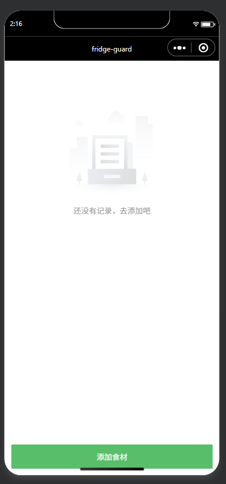
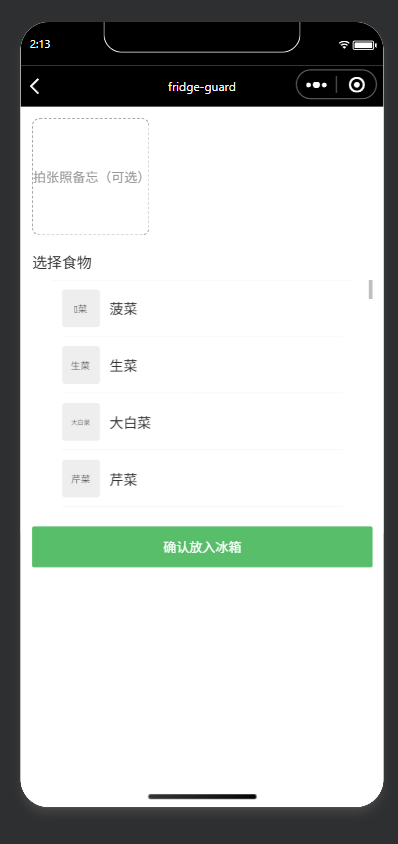
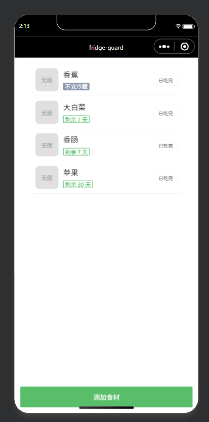

冰箱里塞满食材，放进去的东西转眼就忘了：青菜在冷藏室角落发黄、酸奶过期了才发现、肉冻了半年分不清是哪一顿买的。食物放错冰箱层、忘记吃，是每个家庭每天都在发生的浪费，而过期食物被误食，更是实实在在的健康风险。
食材放进冰箱后没有记录，位置和保质期全凭记忆。等到想起来，往往已经过期变质，只能扔掉——浪费钱，也浪费食物。
fridge-guard 帮你给每样食物记下保质期，到期前自动提醒；不确定的食物可以对照标准图片库识别，而不是靠猜，避免误食风险。



初版做了一个看似合理的功能——强制要求用户给每样食物拍照记录。但在自己实际体验后，我意识到这非常反人类：给食物拍照既费事，拍出来的照片对判断"还能不能吃"也几乎没有帮助。
问题：每次录入都要拍一张照片，操作重、收益低。用户真正缺的不是自己食物的照片，而是"这个东西长什么样、坏了是什么样"的判断依据。
重构：用户更需要标准参考图去对照识别，而不是给自己的食物拍照。因此我把拍照改为可选备忘，并引入了一套标准食物图片库，让用户通过对照识别食物的新鲜度与保质期，而不是被拍照这个动作拦住。